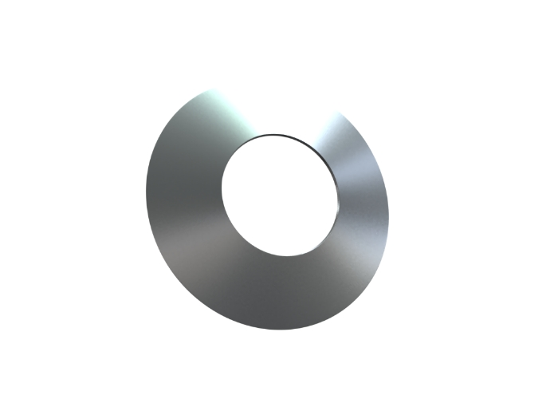
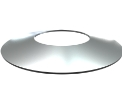
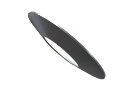

Тарельчатые пружины
Изготовление тарельчатых пружин на заказ партиями от 1-й штуки за 1-3 дня.
Выполним по разнообразным параметрам, чертежам или образцу, фото, эскизам.
(сроки выполнения могут меняться в зависимости от сложности и объема заказа)

- 
- 
Изготовление и производство тарельчатых пружин
//= ../partials/table.html